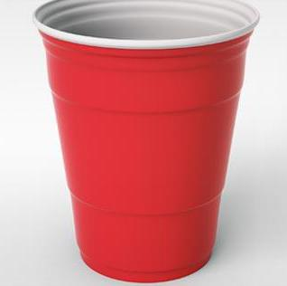

This section outlines and describes what to expect from the Pong Tracker Software Requirements document as well as introduces the Pong Tracker website.
This document summarizes the Pong Tracker website for the client and project team. It includes a description of the product, design and software interfaces, system features, as well as the project approach.
Appendix has a glossary of common terms used.
Actors are printed in italics.
Use cases are printed in bold.
Keywords are printed in bold, blue underline, and are explained in Appendix.
The targeted audience for this product is Beer Pong players. Players must have access to the internet, and must attend an Ontario, post-secondary institution. Each team consists of at least one two users. A user is registered with Pong Tracker. A guest is allowed to participate in a game. A guest is not registered with Pong Tracker.
Pong Tracker is a website that provides users the chance to record and view statistics of Beer Pong games played by themselves and other Pong Tracker users. The website allows a user to enter every detail of the game they are playing in real time. The scope of this project includes both a desktop , as well as a mobile oriented website. The scope does not include native applications for any mobile device.
Pong Tracker allows users to come together to record and share their Beer Pong statistics. Pong Tracker feeds the users' need to stay connected, meet new people, and creates an opportunity to share their interest of the game Beer Pong.
Pong Tracker creates a friendly, competitive and entertaining environment for every user and guest involved.
Future plans for Pong Tracker include:
The client will include advertising space on Pong Tracker.
Future expansion of the target audience will require Pong Tracker to move to a multi-server architecture.
This document follows the standards set by the following publication:
IEEE Std 610.12-1990, IEEE Standard for Software Project Management Plans
http://bohr.wlu.ca/cp317/notes/IEEE_1058.pdf
This standard was developed by the Spring 2013 class of Software Engineering (CP 317).
The following individuals contributed to the development of this document:
| Quinton Black | Reese Garth | George Lifchits |
| Erin Cramer | Henry Goddard | Robin Tang |
| Richard Douglas | Colin Hagerman | Yulou (Chris) Ye |
| Carlie Ferguson | Matt Hengeveld |
The following individuals contributed to the editing of this document:
| Carlie Ferguson | Richard Douglas | Matt Hengeveld |
| Erin Cramer | Chris Ye | George Lifchits |
The Pong Tracker Requirements document summarizes the following:
This section describes the specifics of Pong Tracker.
Listed are the materials for a game of Beer Pong, as well as the way to set up a game.
Listed are the rules for a game of Beer Pong, as assumed by Pong Tracker. Rules may be modified by the teams playing.
A user can search other users and challenge them to a game. Only one user, from one team, is responsible for the operation of the interface. The interface offers a simulation of a Beer Pong game. The user selects the cup that was sunk, then the action, followed by the user who performed the action. Before the game is valid, a confirmation from one member of the team who wasn't tracking the game is required. A leaderboard is available to showcase the strongest users.
The following are the website rules for Pong Tracker. Any non-compliance can result in a user ban.
The following is a list of actors that are associated with Pong Tracker. Actors described here are illustrated in the Use Case Diagram shown above.
The following is a list of use cases that are associated with the actors listed above. The use cases described here are illustrated in the Use Case Diagram shown above.
Pong Tracker is required to run on a Unix server (Hopper).
There is both a desktop and a mobile layout of the website. The user interface for Pong Tracker follows the following characteristics:
Pong Tracker operates on modern, standard internet browsers.
The system uses a relational database.
The website and server system use multiple protocols for communicating over the internet. Described here are some of the application layer protocols.
Minimal hardware is needed for the use of Pong Tracker.
A guest user registers in order to play games and record statistics. A guest user has the option to create an account directly on the website, or to register using a third party login. A guest becomes a user once they have registered. The user's profile page displays personal information and statistics.
From the main page, by selecting login, a user can login to the website, or through the third party login.
Games are the main feature of the website.
A new game is created by a user. A game consists of four players. When a new game is created, the user who created the game, selects and adds other players to the game, up to a maximum of 3. A user may add a guest as a player. A guest cannot interact with the game user interface, however, their statistics are kept up to 2 days. When three players are selected, the game starts, and the user who created the game sees the game interface.
During a game, a user interacts with the game user interface. Actions in the physical game are recorded in the game user interface by selecting a cup, an action, and the applicable player. This is required for advancement of the game.
Actions by a player, associated with specific cups, are selected throughout the game, as they are done in the physical game.
At the conclusion of a game, a game must be confirmed for validity.
At the end of a game, one user from the team that does not score the game (as outlined in 4.3 Score a Game), must confirm results of the game. Once the game is confirmed, it is considered completely finished, and statistics are calculated and recorded. A user may deny validity in which case the game is not factored into statistics.
Statistics are viewable throughout the website. Statistics are calculated by the server and are stored in a database. The leaderboard is displayed on the main page of the website and is viewable to users. A limited leaderboard consisting of the top ten users is viewable to guests. Personal and other user statistics are viewable by users only. Statistics are searchable by user.
At the end of a game, Pong Tracker calculates and records users' statistics. Going to the user profile page displays the user's personal statistics. The user profile page has the functionality to search for other users in order to view their statistics.
The front-end pages for Pong Tracker must be loaded quickly and seamlessly with little time between transitions to other pages, and the game interface's dialog boxes should take virtually no time to load. An initial user volume consisting of post-secondary students in Ontario is expected and as such the software must be built to handle this workload.
For security, there are three requirements:
The client expects to be able to make changes to the website in the future therefore the website must be easy to maintain and well-documented.
The website must have the potential to be expanded to handle larger amounts of users should it become more popular.
The platforms being used for effective execution of Pong Tracker are:
The management of this project has been divided into 5 major parts. Assigned to each part, is an individual who is responsible for delegating responsibilities to others and ensuring deadlines are met. The following is a list of the major parts, and the individuals assigned as "task manager".
| Term | Definition |
| Administrator | An individual that is in charge of Pong Tracker. |
| Air ball | A shot that misses the table altogether. |
| Bounce shot | A shot that hits the table before entering a cup. |
| Defending team | The team who is not currently in possession of the ping pong balls. |
| Eye-to-eye | A means of deciding the first team to shoot. Consists of a member of each team simultaneously shooting while making full eye contact with the other party. Should a cup be scored, the offending party is awarded the first shot. |
| Party foul | An infringement on the rules of the game, or knocking over a cup, spilling its contents. |
| Re-rack | A request to shuffle the orientation of the remaining cups on the opposing side. |
| Redemption | A chance for the losing team to come back. |
| Session | The period from which the user logs in, to when the user either logs out, or closes the internet browser. |
| Shooting team | The team who is currently in possession of the ping pong balls. |
| Solo cup |
Standard cup for Beer Pong
 |
| Trick shot | Any shot containing either multi-directional trajectory or non-standard origination. |
| User | A player that is registered with the website. |
Revision history for the Requirements Document can be found on the SQA Document.
{kind=link}
{kind=link}